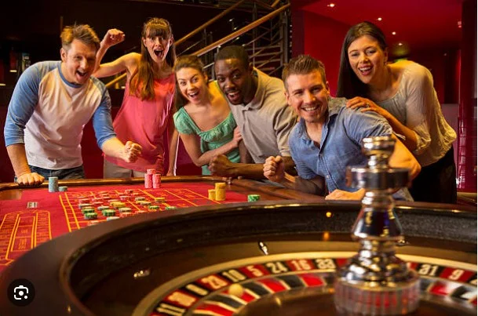

Recommendation & Tips
Ruleta / 23 ene, 2025


You want to belong to my group of winners too.
Contact usThe best methods, tips and news about casino roulette
Recommendation & Tips

Recommendation & Tips

Recommendation & Tips